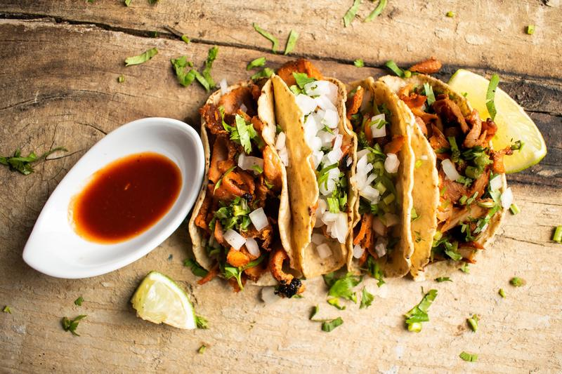
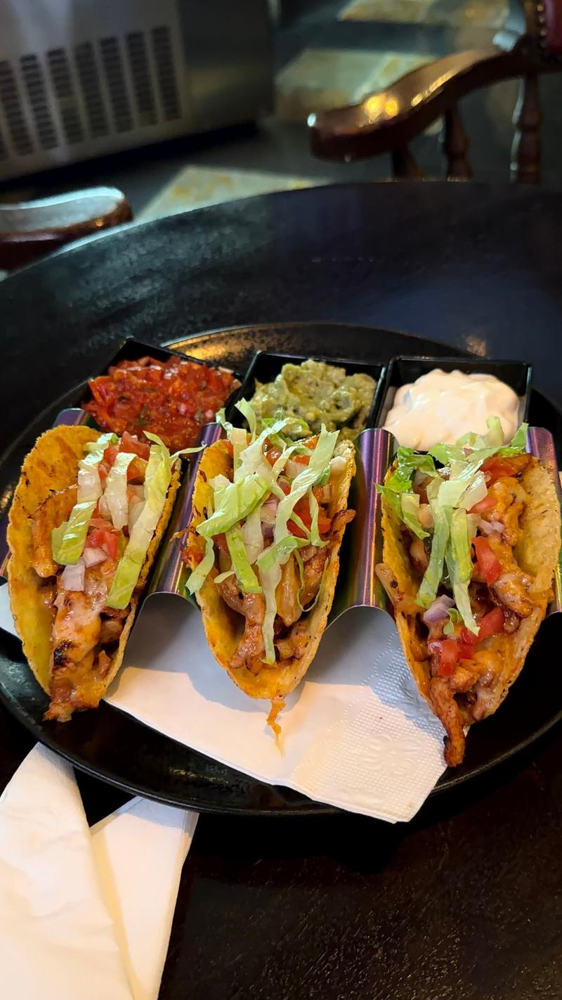
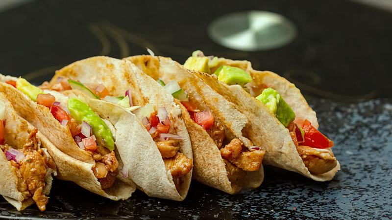
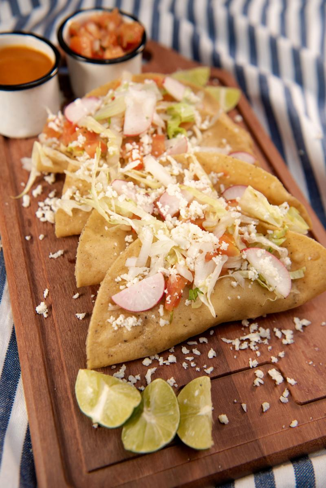
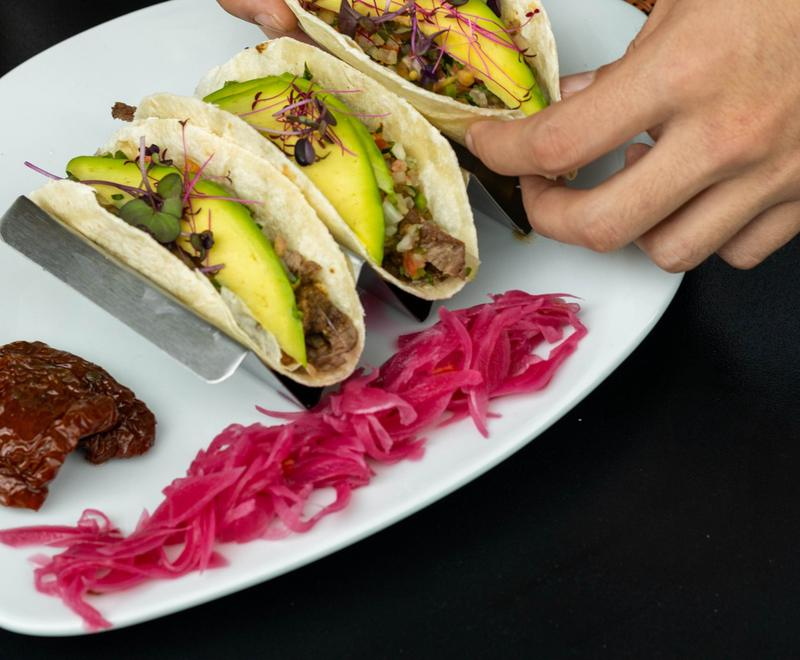
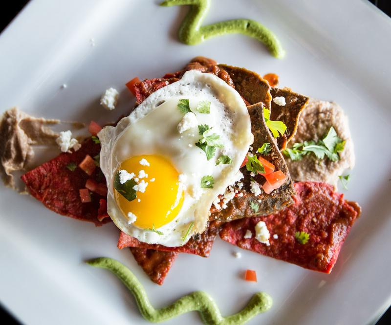

Elige tu carta
Menu & drinks
Every taco comes on fresh corn tortillas unless you ask for flour. A real site carries the full, current menu.
Tacos & plates

No. 1 · TacoAl Pastor
Marinated pork, pineapple, onion, cilantro, lime.

No. 2 · TacoPollo Crujiente
Crispy tortilla, grilled chicken, lettuce, crema, salsa roja.

No. 3 · TacoPollo Suave
Soft flour tortilla, chicken, tomato, lettuce, avocado.

No. 4 · AntojitoTacos Dorados
Fried golden, cabbage, radish, cotija, lime and salsa.

No. 5 · PlatoCarne Asada
Grilled steak, avocado, pickled red onion, salsa macha.

No. 6 · DesayunoChilaquiles
Tortilla chips in red salsa, a fried egg, queso fresco, beans.
Más del menú
And everything else.
- TamalesRed pork or poblano & cheese, with crema$9.50
- EloteGrilled corn, lime crema, cotija, chile$5
- GuacamoleMade when you order, with warm chips$9
- Enchiladas verdesChicken, tomatillo salsa, rice, black beans$14.50
- Salsa barRoja, verde, macha and habanero, free with any orderFree
- Para los niñosCheese quesadilla with rice$6
- ChurrosCinnamon sugar, chocolate for dipping$6
Bebidas
Way past the lime.
Fresh-squeezed and shaken to order. Every margarita can be made without alcohol.
House Margarita$10
Blanco tequila, fresh lime, agave. Rocks or up.
Tamarindo$12
Tamarind, chile-salt rim, reposado.
Paloma$11
Grapefruit, lime, soda, a pinch of salt.
Agua Fresca$4
Hibiscus, horchata or watermelon.
Mexican Hot Chocolate$5
Cinnamon and a little heat.
Good to know: prices and availability can change. Please tell us about any allergies before ordering.